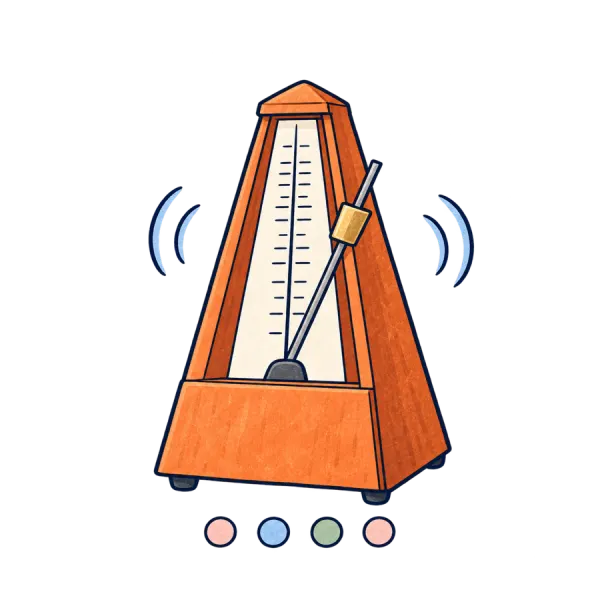
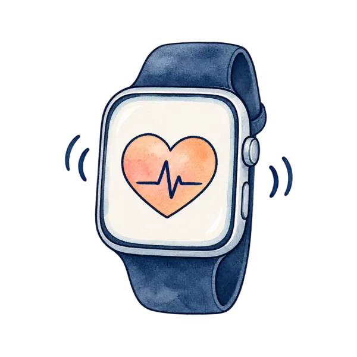
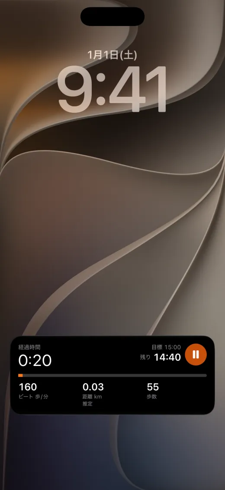
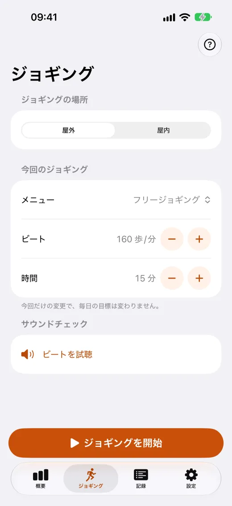
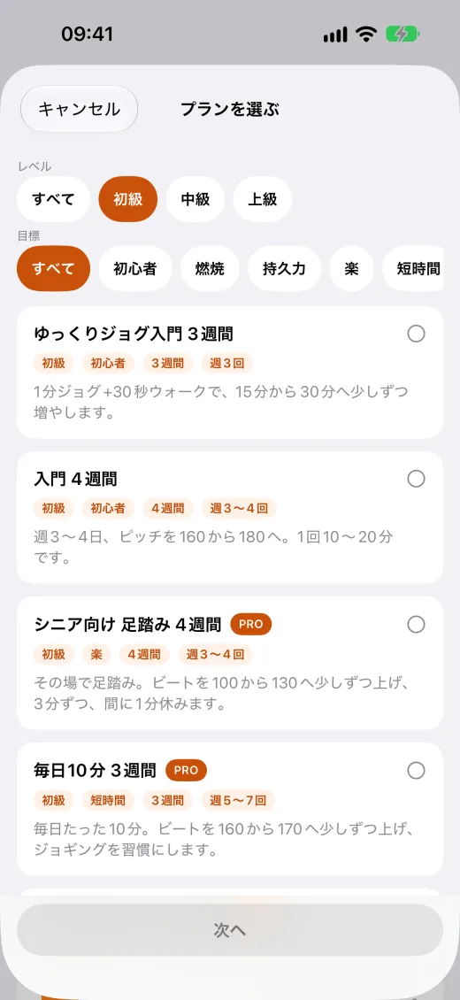
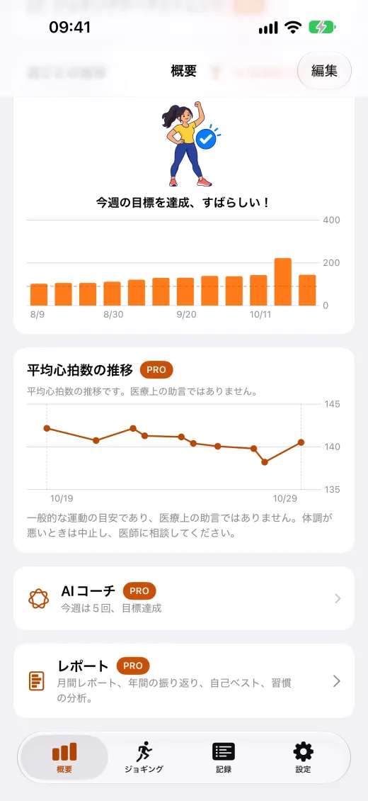
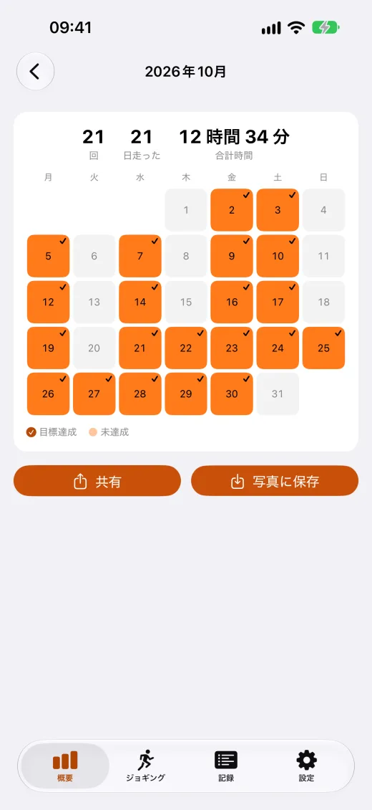

メトロノーム
160〜180歩/分、音と手首の振動。画面ロック中も途切れません。
メニューとプラン
無料の4週間入門プラン。インターバルは自動で切り替えてお知らせ。

Apple Watch
手首だけでジョギングを開始。心拍数の上限アラート付き。
健康データはお使いのデバイスに
アカウント不要。健康データはアップロードも広告への利用もしません。
アプリの画面





無料と Pro
Pro は買い切りでずっと使え、ファミリー共有にも対応。サブスクリプションではありません。
無料
- メトロノーム：160〜180歩/分。音と手首の振動を選べ、画面ロック中も使えます
- ジョギングプラン：はじめの3週間・入門4週間
- 区間メニュー：カスタム1件と入門テンプレート2種は無料
- Apple Watch アプリ：ウォッチから直接ジョギングを開始
- ロック画面・Dynamic Island・ウィジェットで進み具合を表示
Pro
- メニューライブラリの全10種類と、無制限のカスタムメニュー
- さらに多くのプラン：9週間で30分連続、週150分、上級300分
- ジョギングデータと推移、月間レポート、年間の振り返り、CSV・PDF書き出し
- iCloud同期：機種変更しても記録は消えません
- 記録画面の広告を非表示